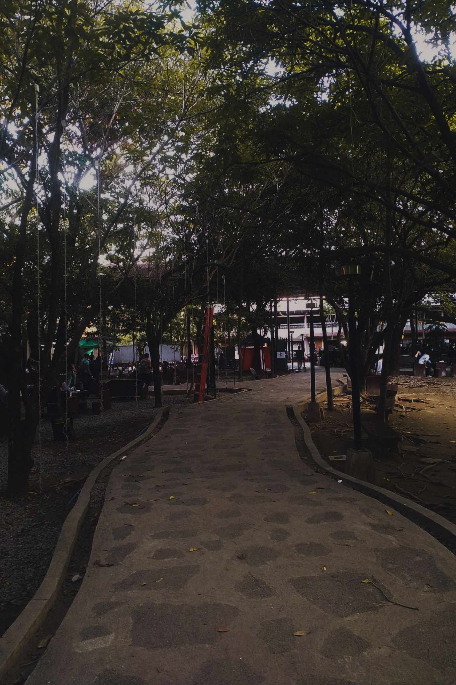

Heart's silent whispers,
Lost in the winds of farewell,
Time's balm soothes the ache.
In parted shadows,
Memories linger and weep,
Love's echo fades soft.
Sunset's golden glow,
Melting into twilight's kiss,
Day surrenders night.
Silhouettes dance free,
Against the canvas of dusk,
Nature's masterpiece.
Crimson streaks the sky,
As the sun bids day goodbye,
Stars prepare to shine.
Whispers in the breeze,
Echoes of the fading light,
Peaceful evening's hush.
Horizon ablaze,
Daylight's final embrace,
Welcomes dusk's embrace.
Fiery sky ablaze,
Reflecting on tranquil seas,
Day meets night's embrace.
Mountains wear the dusk,
Like a cloak of fading light,
Evening's quietude.

Sun's fiery descent,
Silent symphony of hues,
Nightfall's gentle touch
Shadows lengthen slow,
As sun dips below the line,
Twilight softly grows.
Sky a canvas vast,
Painted with the hues of dusk,
Sunset's final act.